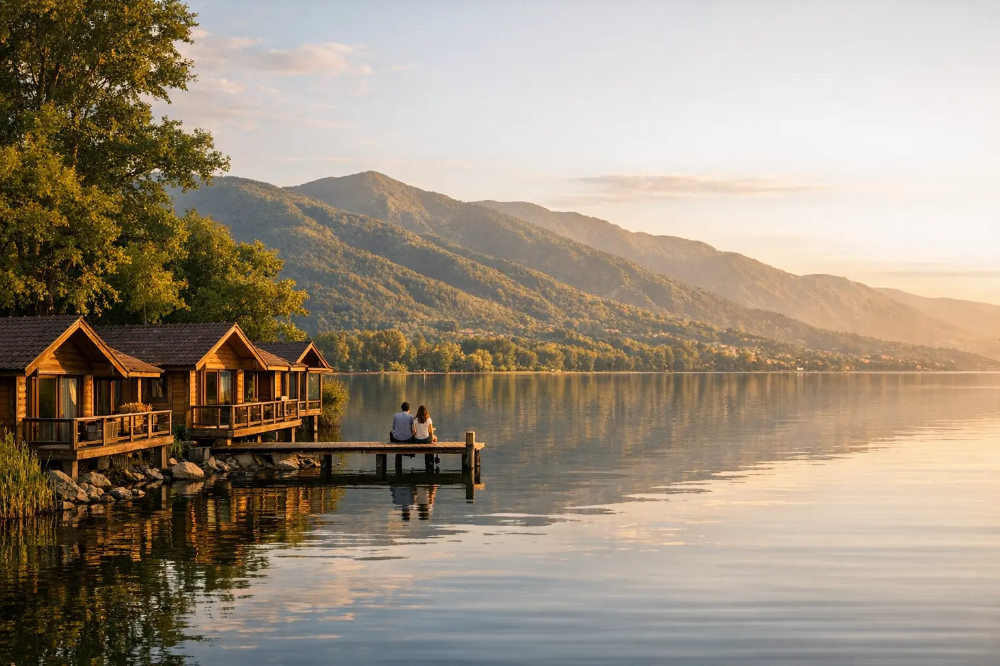

برنامج سياحي في تركيا 10 أيام للعائلات: إسطنبول وبورصة وطرابزون
برنامج عائلي متوازن لعشرة أيام في تركيا يجمع المدينة والطبيعة والثلج أو البحيرات، مع أفكار لأنشطة الأطفال ونصائح عملية للسكن والتنقل مع الصغار.

8 أيام • 7 ليالٍ • تركيا
ثلاث وجهات في رحلة واحدة: معالم إسطنبول، ثم ليلتان بين بحيرة سبانجا وغابات معشوقية، وليلة في بورصة مع جبل أولوداغ.
برنامج إسطنبول وسبانجا وبورصة 8 أيام هو الخيار المناسب لمن يريد المدينة والطبيعة معاً في رحلة واحدة. تبدأ بثلاث ليالٍ في إسطنبول للمدينة القديمة والبوسفور، ثم ليلتين في بنغل أو شاليه قرب بحيرة سبانجا (صبانجا) وسط الغابات، ثم ليلة في بورصة للصعود إلى جبل أولوداغ، قبل العودة إلى إسطنبول لليلة أخيرة.
رسمنا المسار على شكل دائرة حتى لا تعود على الطريق نفسه: من إسطنبول شرقاً إلى سبانجا في نحو ساعتين، ثم إلى بورصة في ساعتين إلى ساعتين ونصف، ومنها إلى إسطنبول عبر جسر عثمان غازي. في سبانجا نختار لك بنغلاً بجاكوزي أو فيلا بمسبح خاص حسب الموسم والميزانية، وهو ما يجعل البرنامج محبوباً لدى العائلات والعرسان. وكل التنقلات بسيارة خاصة مع سائق يتحدث العربية، من الاستقبال في المطار حتى التوديع في نهاية الرحلة.
يستقبلك السائق في مطار إسطنبول (IST) أو صبيحة (SAW) ويوصلك إلى الفندق. بعد الراحة نقترح جولة مسائية خفيفة في ميدان تقسيم وشارع الاستقلال أو في منطقة غلطة. نسلّمك شريحة الاتصال ونراجع معك البرنامج.
يوم كامل في شبه الجزيرة التاريخية: الجامع الأزرق وساحة الهيبودروم وآيا صوفيا، ثم صهريج البازيليك وقصر توبكابي. بعد الظهر نزور البازار الكبير بأزقته المسقوفة، ثم سوق التوابل في أمينونو. نختم بجولة قصيرة على جسر غلطة عند الغروب.
نبدأ بقصر دولمه بهجة ثم أورتاكوي وبيبك على الضفة الأوروبية، ونركب القارب في جولة بالبوسفور نحو ساعة ونصف. بعدها نعبر إلى أسكدار على الجانب الآسيوي لمشاهدة برج الفتاة من الشاطئ، ثم نصعد إلى جامع تشامليجا وتلته لمشاهدة المدينة عند الغروب. ويمكن ختام اليوم بعشاء بحري اختياري.
بعد الإفطار وتسجيل الخروج ننطلق شرقاً نحو سبانجا في نحو ساعتين. نتوقف في قرية معشوقية على سفوح جبل كارتبه، حيث الشلالات والجداول والمطاعم بين الأشجار، ونصعد بتلفريك كارتبه لمشاهدة الغابات والبحيرة من الأعلى. بعد الظهر نصل إلى البنغل في سبانجا، ويبقى المساء للاسترخاء والشواء أو الجاكوزي.
صباح هادئ على ضفاف بحيرة سبانجا مع نزهة على الممشى وركوب القارب. بعد الظهر يمكن تجربة الأنشطة الاختيارية: الدراجات الرباعية (ATV) في الغابة أو الزيبلاين أو ركوب الخيل. ولمن معه أطفال نقترح زيارة حديقة أورمانيا للحياة البرية في كوجالي على بعد نحو 45 دقيقة، ثم العودة إلى البنغل.
ننطلق نحو بورصة (بورصا) في ساعتين إلى ساعتين ونصف مروراً بخليج إزميت. نزور الجامع الكبير وسوق الحرير في كوزا هان والسوق المسقوف، ثم الجامع الأخضر وضريحي عثمان غازي وأورهان غازي. بعد تسجيل الدخول يمكنك تجربة حمامات المياه الحارة في حي تشكيرغه مساءً، وتذوّق الإسكندر كباب الذي اشتهرت به بورصة.
صباحاً نصعد بتلفريك أولوداغ إلى المرتفعات للاستمتاع بالثلج في الشتاء أو بالمروج والهواء العليل في الصيف. في طريق النزول نشرب الشاي تحت شجرة الدلب المعمّرة في إنكايا، ثم ننطلق إلى إسطنبول في نحو ساعتين ونصف عبر جسر عثمان غازي. تصل مساءً إلى الفندق مع وقت للعشاء والتمشي.
حسب موعد رحلتك، يمكنك التسوق صباحاً في أحد المولات الكبرى أو شراء الهدايا من الأسواق القريبة من الفندق. يمر بك السائق في الوقت المتفق عليه ويوصلك إلى المطار قبل الإقلاع بنحو ثلاث ساعات. نتمنى لك عودة سالمة.
| المدينة | الليالي | المقترح |
|---|---|---|
| إسطنبول | 4 | فندق 4 نجوم في تقسيم أو شيشلي أو السلطان أحمد (3 ليالٍ في البداية وليلة قبل المغادرة). |
| سبانجا | 2 | بنغل خشبي بجاكوزي، أو فيلا بمسبح خاص، أو فندق مطل على البحيرة، حسب الموسم وعدد أفراد العائلة. |
| بورصة | 1 | فندق 4 نجوم في وسط بورصة أو فندق بحمامات حارة في حي تشكيرغه. |
احجز هذا البرنامج
أضف تاريخ الوصول وعدد المسافرين ومستوى الفنادق، ويصلك عرض مكتوب بالسعر النهائي عبر واتساب.
أسئلة وأجوبة
تبعد سبانجا نحو 140 كيلومتراً عن وسط إسطنبول، أي قرابة ساعتين بالسيارة حسب الازدحام، وهي أقرب إلى مطار صبيحة على الجانب الآسيوي.
سبانجا (وتُكتب أيضاً صبانجا أو صبنجة) بلدة على بحيرة كبيرة تشتهر بالبنغلات والفلل، أما معشوقية فقرية جبلية قريبة على سفوح كارتبه تشتهر بالشلالات والمطاعم بين الأشجار. في هذا البرنامج تزور الاثنتين.
نوفّر خيارات متعددة: بنغلات بجاكوزي داخلي، أو فلل بمسبح خاص، أو فنادق على البحيرة. ونؤكد لك تفاصيل الوحدة وصورها قبل تأكيد الحجز.
نعم، المسافات بين المدن معتدلة (ساعتان تقريباً)، وفيه أنشطة للأطفال مثل القارب وحديقة الحيوانات والثلج في أولوداغ شتاءً. ونختار سيارة مناسبة لعدد أفراد العائلة.
من دليل أويا
برنامج عائلي متوازن لعشرة أيام في تركيا يجمع المدينة والطبيعة والثلج أو البحيرات، مع أفكار لأنشطة الأطفال ونصائح عملية للسكن والتنقل مع الصغار.

بدلاً من أرقام عامة لا تناسب رحلتك، نشرح لك مكونات تكلفة السفر إلى تركيا وما يرفعها ويخفضها، مع طريقة بسيطة لحساب ميزانية أسبوع ونصائح عملية للتوفير.

تركيا بلد بمناخات متعددة، فما يناسب إسطنبول قد لا يناسب أنطاليا أو أوزنجول في الشهر نفسه. دليل شهر بشهر يساعدك على اختيار التوقيت والوجهة معاً.
قد يعجبك أيضاً

خمسة أيام متوازنة في إسطنبول: المدينة القديمة، البوسفور بين قارتين، ورحلة يوم إلى بحيرة سبانجا ومعشوقية، مع فندق مختار وسائق يتحدث العربية.

أسبوع كامل في تركيا دون تبديل الفندق: تسكن في إسطنبول وتخرج منها برحلات يومية إلى سبانجا ومعشوقية، وبورصة وجبل أولوداغ، وجزر الأميرات، بسيارة خاصة وسائق يتحدث العربية.

أسبوع يجمع سحر إسطنبول وهدوء بورصة: المدينة القديمة والبوسفور، ثم ليلتان في بورصة مع تلفريك أولوداغ وأولى الجوامع العثمانية.
خدمة شخصية من البداية للنهاية
نصمم لك برنامجاً خاصاً بعدد الأيام والمدن والفنادق التي تريدها — فقط أخبرنا.